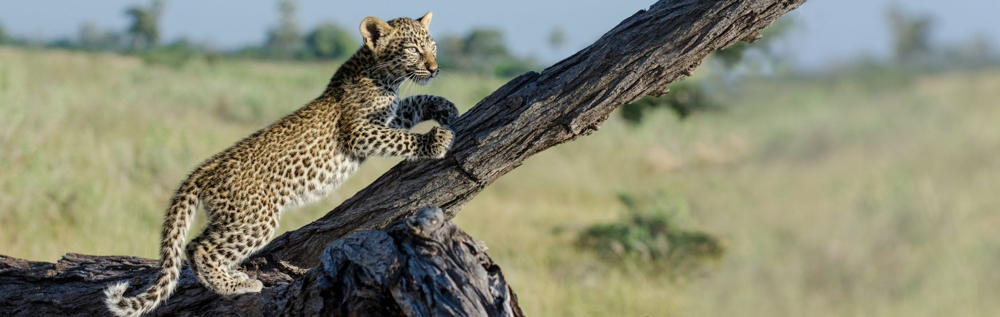
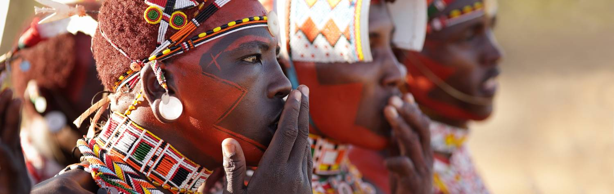

Kenya’s rich wildlife and immense landscapes are, quite simply, iconic.
The oft-pictured imagery of an African safari comes to life as you traverse
the sprawling plains of the Maasai Mara or drive in the legendary shadow of
Mount Kilimanjaro. The country’s prolific wildlife offers incomparable opportunities
to observe these magnificent creatures up close in their natural habitats.
Through our Kenyan partners, we work with some of the country’s top guides to
ensure that each Kenyan safari experience incorporates as much learning as
it does observing. In customized open-top 4x4s, these guides will take you
to some of Kenya’s most remote and untouched corners, providing you with intimate
wildlife encounters that you’ll often have all to yourself.
From the sparking beaches of the Indian Ocean through to its vibrant cities,
and out into the unspoiled bush, Kenya has something special to offer both newcomers
and older ‘safari hands’. Here are some of the most iconic and remarkable experiences
that define a Kenyan safari – whether you’re visiting for the first or the fiftieth time:
The Maasai Mara National Reserve:
When asked to imagine an African safari,
you’ll probably picture the plains of the Maasai Mara without even realizing it. Flat-topped
acacia trees dot vast, rolling grasslands covered with thousands of grazing animals. Lions
doze in the shade, while zebras nibble at the tall grass just meters away. Enormous herds
of Cape buffalo with tiny oxpeckers on their backs watch nonchalantly as safari vehicles
slowly drive past, while giraffes take breaks from browsing to pop their heads out of treetops.
Driving for hours across this endless, elemental landscape as the sky transforms theatrically
above you is truly one of the great African experiences.
The Great Wildebeest Migration:
Going hand in hand with the Maasai Mara is
inevitably the ‘Great Wildebeest Migration’. Heralded as one of the Earth’s most remarkable
natural spectacles, this perpetual procession of 1.5 million wildebeest, zebras and antelopes
is nearly impossible to describe. As thousands of ungulates nervously trundle across the red
sand and ford the crocodile-infested Mara River, the sound of hooves is almost overpowering.
When they reach the rolling green hills of the Mara, months are spent feasting on this
nourishing grass before returning south to the Serengeti. With the great cats and opportunistic
scavengers escorting the herds for the entire duration, the thrills and excitement of this
natural phenomenon are positively endless.
Authentic Maasai Village Tours:
Kenya’s brightly clad and intricately adorned
Maasai warriors are among the continent’s – and the world’s – most recognizable indigenous
tribes. These semi-nomadic pastoralists have lived in Kenya and Tanzania since the 17th century
, including in several areas designated as national parks. The Maasai preserve components of
their rich tribal culture by sharing their communities, bomas (homesteads), and prized cattle
herds with tourists. A visit to a Maasai village offers many unique opportunities to learn about
their vibrant history and ancient beliefs, from boma tours and traditional dance performances,
to lessons in medicinal plants and bush survival, and wilderness walks with some of the world’s
wiliest trackers.
Amboseli National Park:
Among Kenya’s legendary landscapes, few stand taller
than Amboseli National Park, where impressive herds of the country’s largest elephants
roam freely against the mighty snow-dome of Mount Kilimanjaro. As the sun rises over ‘the
roof of Africa’, mothers and their calves drink and bathe in glacial-fed rivers and lakes.
Large game thrives on these protected plains, creating perfect photo opportunities around
every corner. The views from the top of Observation Hill have inspired generations of authors,
painters and conservationists, and sipping a sundowner as the sun sets behind ‘Kili’ is
nothing short of a transformative experience.
